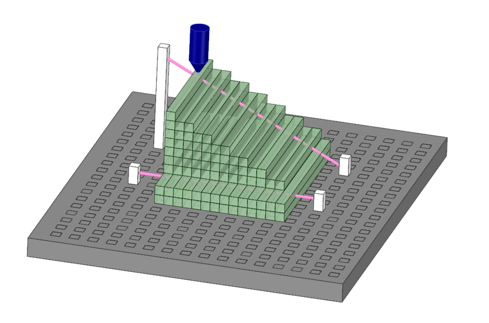
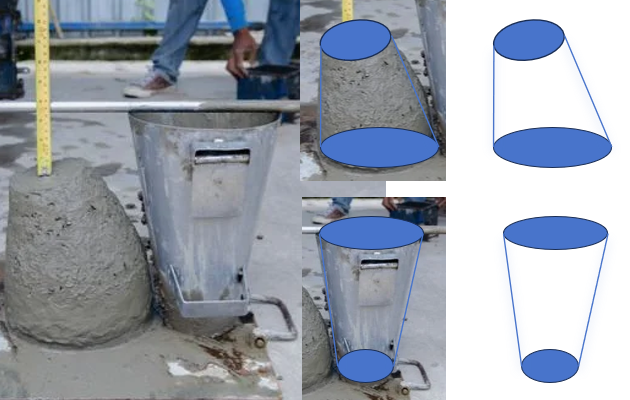
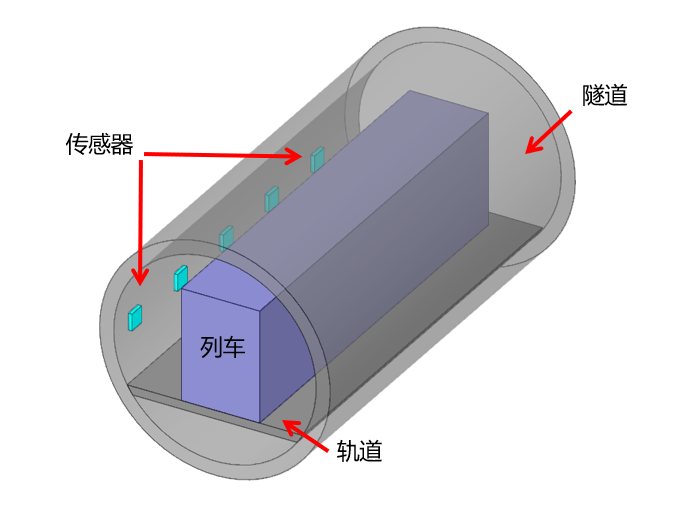
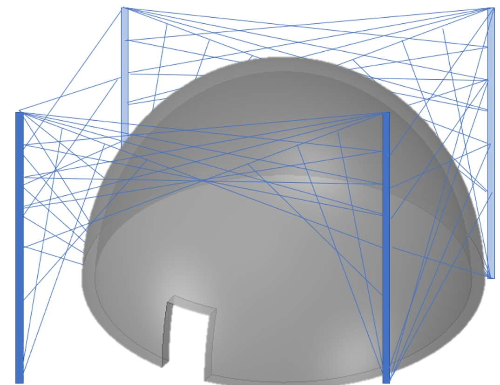
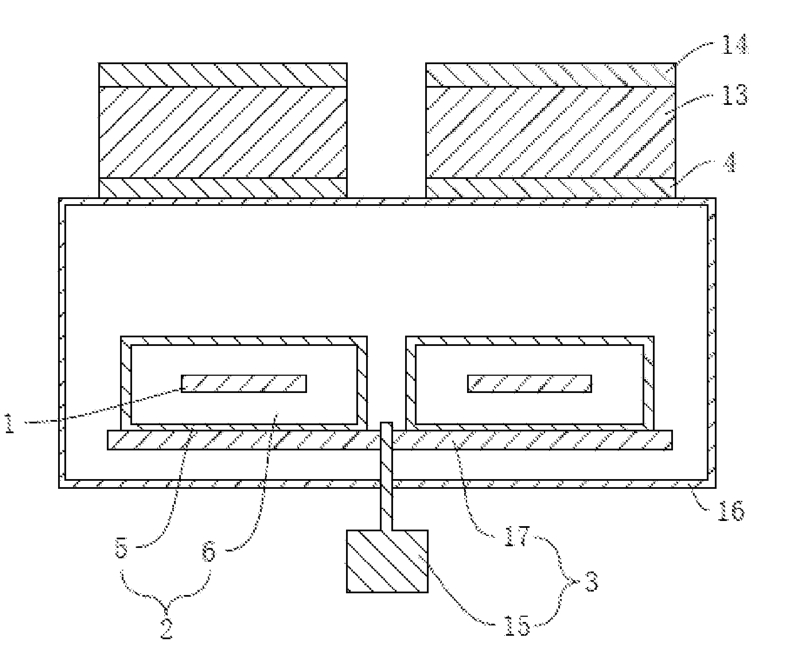
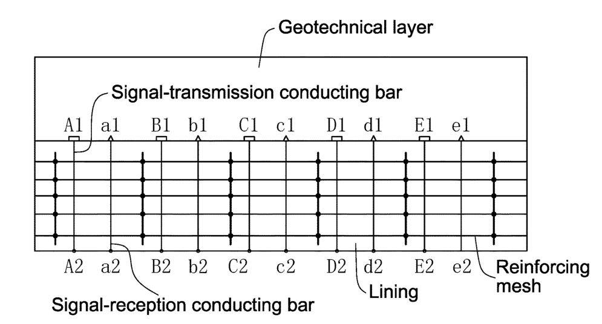
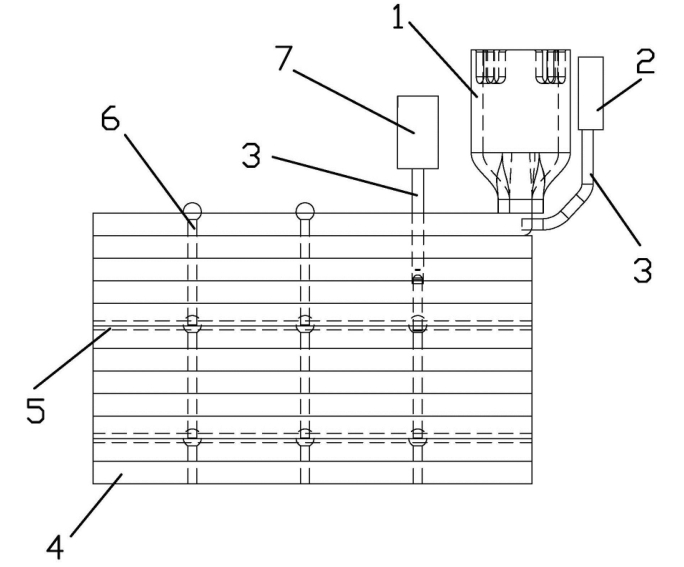
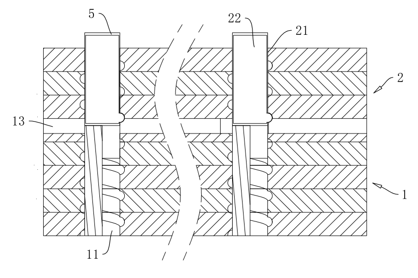
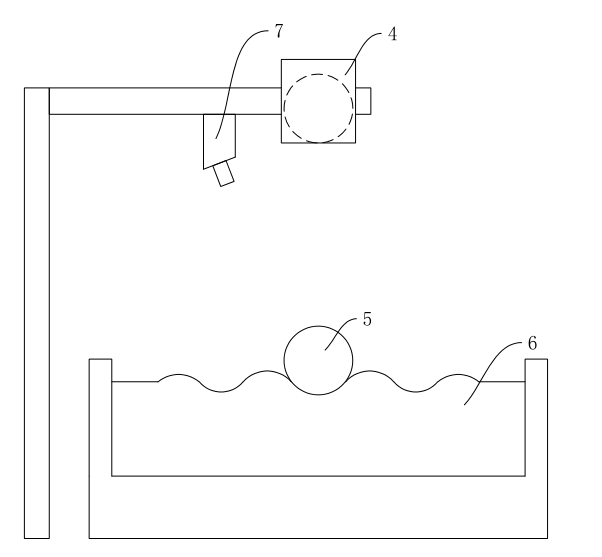

Patents
2025

复合预应力加强筋的3D打印方法及系统
Pre-stress reinforcing technique and system for 3D concrete printing
Pre-stress reinforcing technique and system for 3D concrete printing

基于多模态视觉大模型的混凝土工作性能测量方法及系统
Multi-modal visual big model based concrete performance measurement method and system
Multi-modal visual big model based concrete performance measurement method and system

混凝土原位制备应变传感器的方法及测量系统
In-situ concrete strain sensor preparation method and measurement system
In-situ concrete strain sensor preparation method and measurement system

一种仿生房屋建造方法及系统
A bionic house construction method and system
A bionic house construction method and system
2024

Durability test method, device and system of phase change material

Method and system for non-destructive testing of tunnel lining

用于加强混凝土结构的加强筋制备方法及3D打印系统
Method and system to reinforce the 3D printed concrete
Method and system to reinforce the 3D printed concrete
2023

用于3D打印混凝土结构的原位连续配筋方法
Method for in-situ reinforcement of 3D printed concrete structure
Method for in-situ reinforcement of 3D printed concrete structure

一种基于表面冲击的液体材料性能检测方法以及系统
Method for detecting the properties of liquid materials based on surface impact
Method for detecting the properties of liquid materials based on surface impact
申报发明专利50余项
- [01] | 锈蚀程度对钢纤维与混凝土界面粘结性能影响的表征方法 | CN202411682572.2 | 2025/2/28
- [02] | 一种高温环境下的混凝土材料性能测试方法及系统 | CN202411032676.9 | 2024/11/8
- [03] | 混凝土原位制备应变传感器的方法及测量系统 | CN202410540642.4 | 2024/8/2
- [04] | 一种储能混凝土结构构件的3D打印原位成型方法以及系统 | CN202311547790.0 | 2024/1/2
- [05] | 一种相变蓄冷罐体及控制维护方法 | CN202311409941.6 | 2024/7/19
- [06] | 相变储能罐中材料泄漏定位检测的方法及系统 | CN202311576135.8 | 2024/2/27
- [07] | 一种双离子层润滑结构、设备及润滑方法 | CN201810441365.6 | 2024/3/1
- [08] | 一种储能混凝土结构构件的3D打印原位成型方法以及系统 | CN202311547790.0 | 2024/6/7
- [09] | 一种建筑3D打印加工装置 | CN201811583694.0 | 2024/3/15
- [10] | 能源桩及其可更换相变材料的系统与方法 | CN202410486868.0 | 2024/5/28
- [11] | 锈蚀程度对钢纤维与混凝土界面粘结性能影响的表征方法 | CN202411682572.2 | 2024/12/24
- [12] | 一种叶片、用于挤出浆料的喷头及3D打印机 | CN201811583695.5 | 2024/1/30
- [13] | 一种高温环境下的混凝土材料性能测试方法及系统 | CN202411032676.9 | 2024/8/30
- [14] | 能源桩及其可更换相变材料的系统与方法 | CN202410486868.0 | 2024/7/12
- [15] | 用于加强混凝土结构的加强筋制备方法及3D打印系统 | CN202210649075.7 | 2024/7/19
- [16] | 一种基于管道运输的双离子层润滑结构、设备及润滑方法 | CN201810441727.1 | 2024/3/1
- [17] | 一种离子层润滑结构、挤出头、设备及润滑方法 | CN201810441504.5 | 2024/1/23
- [18] | 一种仿生房屋建造方法及系统 | CN202410633310.0 | 2024/9/3
- [19] | 一种相变蓄冷罐体及控制维护方法 | CN202311409941.6 | 2023/12/19
- [20] | 相变材料耐久性的测试方法、设备及系统 | CN202310649860.7 | 2023/7/7
- [21] | 一种建筑供热与制冷一体化系统及控制方法 | CN202311089928.7 | 2023/10/31
- [22] | 隧道衬砌深层无损检测方法及系统 | CN202310126084.2 | 2023/5/9
- [23] | 相变材料耐久性的测试方法、设备及系统 | CN202310649860.7 | 2023/8/8
- [24] | 用于3D打印混凝土结构的原位连续配筋方法 | CN202211240542.7 | 2023/4/7
- [25] | 一种纳米凝胶外加剂及其制备方法和应用、3D打印地聚物材料及其制备方法和应用 | CN202310139110.5 | 2023/4/28
- [26] | 隧道衬砌深层无损检测方法及系统 | CN202310126084.2 | 2023/3/21
- [27] | 一种基于表面冲击的液体材料性能检测方法以及系统 | CN202211554770.1 | 2023/1/20
- [28] | 一种纳米凝胶外加剂及其制备方法和应用、3D打印地聚物材料及其制备方法和应用 | CN202310139110.5 | 2023/9/22
- [29] | 相变储能罐中材料泄漏定位检测的方法及系统 | CN202311576135.8 | 2023/12/26
- [30] | 用于3D打印混凝土结构的原位连续配筋方法 | CN202211240542.7 | 2023/9/15
- [31] | 一种建筑供热与制冷一体化系统及控制方法 | CN202311089928.7 | 2023/9/22
- [32] | 一种基于表面冲击的液体材料性能检测方法以及系统 | CN202211554770.1 | 2023/4/21
- [33] | 一种埋入式传感器保护装置及制作方法 | CN202111175154.0 | 2022/1/14
- [34] | 一种埋入式传感器保护装置及制作方法 | CN202111175154.0 | 2022/9/6
- [35] | 用于加强混凝土结构的加强筋制备方法及3D打印系统 | CN202210649075.7 | 2022/9/16
- [36] | 用于纤维植插的3D打印方法、3D打印装置及3D打印系统 | CN202111430812.6 | 2022/3/8
- [37] | 一种粗骨料植埋装置及3D打印机 | CN202011286962.X | 2022/4/12
- [38] | 用于纤维植插的3D打印方法、3D打印装置及3D打印系统 | CN202111430812.6 | 2022/12/9
- [39] | 一种粗骨料植埋装置及3D打印机 | CN202011286962.X | 2021/3/23
- [40] | 一种3D打印用环氧树脂混凝土材料及其制备方法 | CN201910678377.5 | 2021/12/10
- [41] | 粉末打印成型与模具成型结合的3D打印机及其打印方法 | CN201810749835.5 | 2020/7/24
- [42] | 基于磁场的混凝土中钢筋锈蚀无损动态监测传感器及系统 | CN201811213216.0 | 2019/2/22
- [43] | 一种叶片、用于挤出浆料的喷头及3D打印机 | CN201811583695.5 | 2019/3/29
- [44] | 一种建筑3D打印加工装置 | CN201811583694.0 | 2019/3/19
- [45] | 一种3D打印用环氧树脂混凝土材料及其制备方法 | CN201910678377.5 | 2019/10/18
- [46] | 一种赤泥-偏高岭土复合地聚物胶凝材料及其制备方法 | CN201910697617.6 | 2019/10/22
- [47] | 一种挤出式3D打印用石膏基复合胶凝材料及其制备方法 | CN201810316957.5 | 2018/8/10
- [48] | 一种基于3D打印水泥基无机胶凝材料及其制备方法 | CN201810315925.3 | 2018/9/4
- [49] | 一种基于管道运输的双离子层润滑结构、设备及润滑方法 | CN201810441727.1 | 2018/9/4
- [50] | 一种双离子层润滑结构、设备及润滑方法 | CN201810441365.6 | 2018/9/14
- [51] | 粉末打印成型与模具成型结合的3D打印机及其打印方法 | CN201810749835.5 | 2018/11/20
- [52] | 一种离子层润滑结构、挤出头、设备及润滑方法 | CN201810441504.5 | 2018/9/25